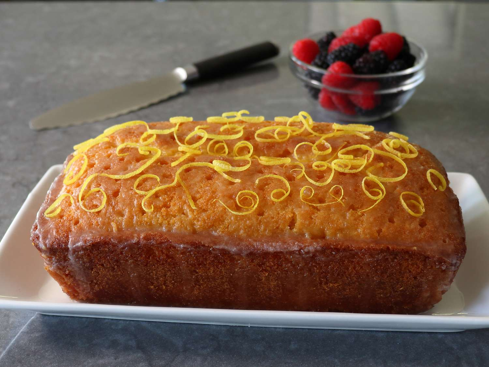

Chocolate Chip Cookies
Video credit: The Cooking Foodie on YouTube
Ingredients
- 2 1/4 cups all-purpose flour
- 1/2 teaspoon baking soda
- 1 cup unsalted butter, room temperature
- 1/2 cup granulated sugar
- 1 cup packed light-brown sugar
- 1 teaspoon salt
- 2 teaspoons pure vanilla extract
- 2 large eggs
- 2 cups semisweet and/or milk chocolate chips
Steps
- Preheat oven to 350°F (175°C). Line baking sheets with parchment paper.
- In a small bowl, whisk together the flour and baking soda; set aside.
- In a large bowl, beat the butter and sugars with a mixer on medium speed until light and fluffy.
- Add the salt, vanilla, and eggs, and beat until well mixed.
- Gradually add the flour mixture, and mix until just combined.
- Fold in the chocolate chips.
- Drop heaping tablespoon-size balls of dough about 2 inches apart on the baking sheets.
- Bake until cookies are golden around the edges but still soft in the center, 8 to 10 minutes.
- Let cookies cool on the baking sheets for 1-2 minutes before transferring them to a wire rack to cool completely.
Tips
- For chewier cookies, chill the dough for at least 30 minutes before baking.
- Add a pinch of cinnamon for a unique twist.
- Use a mix of different chocolate chips for more variety in flavor.
Lemon Drizzle Cake

Ingredients
- 225g unsalted butter, softened
- 225g caster sugar
- 4 large eggs
- 225g self-raising flour
- Zest of 1 lemon
- Juice of 1 lemon
- 100g icing sugar
- 2 tablespoons lemon juice (for drizzle)
Steps
- Preheat the oven to 180°C (350°F). Grease and line a loaf tin.
- Cream the butter and sugar together until light and fluffy.
- Beat in the eggs, one at a time, until fully incorporated.
- Fold in the flour and lemon zest until well combined.
- Spoon the mixture into the prepared loaf tin and level the surface.
- Bake for 40-45 minutes or until a skewer inserted into the center comes out clean.
- Mix the icing sugar and lemon juice to make the drizzle.
- While the cake is still warm, prick it all over with a fork and pour over the drizzle.
- Let the cake cool completely in the tin before removing and serving.
Tips
- Add some poppy seeds to the batter for extra texture.
- Serve with a dollop of whipped cream for an indulgent treat.
- Store in an airtight container to keep the cake moist.